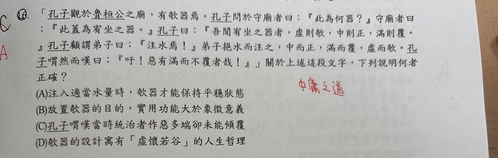

分享原卷｜第16題
完整原題
作答所需文章／材料
孔子觀於魯桓公之廟，有欹器焉。孔子問於守廟者曰：「此為何器？」守廟者曰：「此蓋為宥坐之器。」孔子曰：「吾聞宥坐之器者，虛則欹，中則正，滿則覆。」孔子顧謂弟子曰：「注水焉！」弟子挹水而注之，中而正，滿而覆，虛而欹。孔子喟然而嘆曰：「吁！惡有滿而不覆者哉！」關於上述這段文字，下列說明何者正確？
(A) 注入適當水量時，欹器才能保持平穩狀態
(B) 放置欹器的目的，實用功能大於象徵意義
(C) 孔子喟嘆當時統治者作惡多端卻未能傾覆
(D) 欹器的設計寓有「虛懷若谷」的人生哲理
先想一想，再查看答案、解說與原圖
原卷作答：C，原卷紅筆訂正A
正確答案：A。原文「中則正」「中而正」，說明水量適中時器身端正，與A相合。
逐項解析
| 選項與原句 | 判讀 | 句意與判斷理由 |
|---|---|---|
| (A) 注入適當水量時，欹器才能保持平穩狀態 | 應選 | 原文「中則正」「中而正」，說明水量適中時器身端正，與A相合。 |
| (B) 放置欹器的目的，實用功能大於象徵意義 | 不選 | 宥坐之器有置於座旁警戒自己的意義，不能把本文重點說成實用功能大於象徵意義。 |
| (C) 孔子喟嘆當時統治者作惡多端卻未能傾覆 | 不選 | 「惡有」是「哪有」，不是作惡；孔子藉滿而覆感嘆自滿的危險，非批評統治者惡行未受報。 |
| (D) 欹器的設計寓有「虛懷若谷」的人生哲理 | 不選 | 本文以中則正、滿則覆提醒適中與戒盈；完全空虛反而傾斜，D不是這段最直接的寓意。 |
詳細說明與解題步驟
把三個狀態對照：虛→傾斜；中→端正；滿→傾覆。結尾反問「哪有滿而不覆的呢」，將器物現象推到不可自滿的警惕。不要把「惡」一律讀成邪惡。
【A】原文「中則正」「中而正」，說明水量適中時器身端正，與A相合。
【B】宥坐之器有置於座旁警戒自己的意義，不能把本文重點說成實用功能大於象徵意義。
【C】「惡有」是「哪有」，不是作惡；孔子藉滿而覆感嘆自滿的危險，非批評統治者惡行未受報。
【D】本文以中則正、滿則覆提醒適中與戒盈；完全空虛反而傾斜，D不是這段最直接的寓意。
核對註記：已實看原卷並核對題幹、全部選項與必要文章；未確認課本對應課次，歸綜合。
原圖（僅本題）
